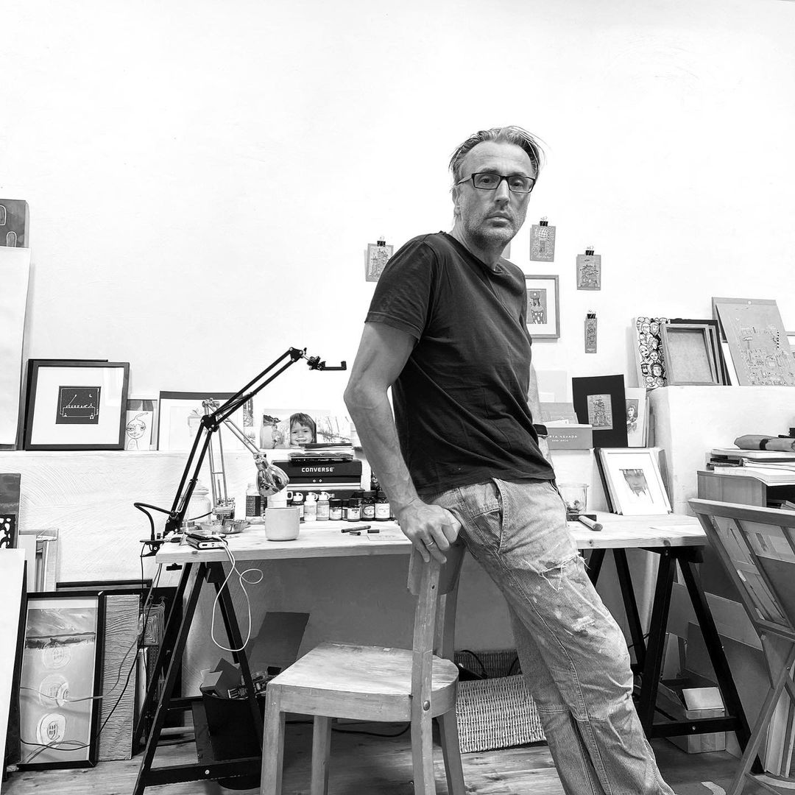

Fineliner · Tusche · Kraftkarton
Die Linie kommt ohne Plan und ohne Radiergummi. Sie folgt dem Moment, dem Unbewussten — und wächst zu Räumen, Fäden und inneren Landschaften.

Ich zeichne, seit ich denken kann – und vielleicht sogar schon davor. In der Grundschule wechselten meine Comic-Zeichnungen häufiger den Besitzer als Pausenbrote, und meine Schwester (die mich früh und liebevoll gefördert hat) brachte mich mit zehn erst richtig auf den Geschmack. Mit 14 entdeckte ich den Surrealismus – und damit die Welt hinter der Welt: innere Räume, Traumlandschaften, Linien aus dem Unterbewusstsein.
Nach dem Abi stand ich vor der großen Frage: Informatik, Kunst oder Grafikdesign? Die Kunst war mir zu verkopft, die Informatik zu trocken – also wurde es der goldene Mittelweg: Visuelle Kommunikation in Münster. Seit meinem Diplom 1993 arbeite ich als Grafikdesigner und Art Director in einer Kommunikationsagentur – mit Herz, Verstand und ordentlich Kaffee.
Kurz darauf fand ich nicht nur meinen Stil, sondern auch meine große Liebe: meine Frau Jutta. Gemeinsam haben wir zwei wundervolle Töchter großgezogen. Und wie das Leben so spielt, rückte die freie Kunst in dieser intensiven Zeit ein Stück nach hinten. Aber keine Sorge: Sie hat nur kurz geschlafen.
Seit die Kinder aus dem Haus sind, ist wieder Raum für das, was mich im Innersten antreibt – die spontane, intuitive Linie. Ohne Plan, ohne Radiergummi, einfach drauflos: Fineliner trifft Kraftkarton, Herz trifft Hand, und der Kopf darf Pause machen. Dabei taucht in meinen Zeichnungen immer wieder ein Motiv auf: ein Faden. Vielleicht ein Echo meiner Mutter, die Schneiderin war. Oder meines Vaters, der mir den rationalen Blick auf die Welt mitgegeben hat. Beides fließt ein – wie eben dieser Faden, der alles verbindet.
In den letzten Jahren sind viele kleine Werke entstanden – und ein wachsendes Archiv an Zeitraffervideos auf Instagram. Wer mag, darf mir dort beim Zeichnen zusehen. Oder hier – ganz analog – auf dem iPad.
Martin Hümmecke lebt und arbeitet in Soest. Seine kleinformatigen Zeichnungen entstehen spontan und ohne Vorzeichnung, meist innerhalb einer knappen Stunde – ein Arbeitsprinzip, das er bewusst beibehält, weil erst der Verzicht auf Plan und Korrektur die Linie unmittelbar aus dem Moment heraus wachsen lässt.
Bekannt wurde sein Werk über Instagram und TikTok, wo er den gesamten Entstehungsprozess seiner Arbeiten als Zeitraffervideo zeigt – vom ersten Strich auf dem Kraftkarton bis zum fertigen Motiv. Diese Offenheit hat ihm eine große, internationale Fangemeinde eingebracht und macht das Zeichnen selbst zu einem Teil des Werks.
Neben der „Roten Serie" und den Kraftkarton-Artcards zählt dazu auch das langjährige Projekt „won't quit tryin'" (2016–2023) sowie weitere Werkgruppen wie „Inner Times" und „Letter Landscapes". Arbeiten von Hümmecke sind zudem auf Saatchi Art vertreten.
Die Linie ist Ursprung. Sie ist nicht nur das erste Zeichen auf dem Papier, sondern auch die elementarste Form des Ausdrucks. In der Kunst von Martin Hümmecke nimmt sie eine besondere Rolle ein: Sie ist kein Werkzeug des Verstandes, keine kontrollierte Formgebung, sondern ein Instrument der Intuition – ein seismografischer Ausdruck innerer Bewegungen. Sie folgt keinem Plan, sondern wächst aus dem Moment heraus. Aus ihr entstehen Räume, Konstruktionen, sogar ganze Welten – ohne Perspektive, ohne Raster, und doch voller rätselhafter Logik.
Im Zentrum vieler Arbeiten steht ein wiederkehrendes Motiv: der Faden. Dieses scheinbar einfache Element trägt eine tiefe symbolische wie strukturelle Bedeutung. Es ist einerseits eine Hommage an die Mutter, die Schneiderin – eine Figur der Verbindung, der Gestaltung, der Fürsorge. Andererseits ist der Faden auch ein philosophisches und physikalisches Prinzip: eine eindimensionale Struktur, die Komplexität trägt, sich verknotet, verschlingt, ausdehnt – und dabei Räume definiert, ohne selbst ein Raumkörper zu sein.
Im Kontext der Topologie wird das Wollknäuel zum faszinierenden Objekt: eine kontinuierliche Linie, die in sich selbst verschlungen ist und dabei eine Form erschafft, die mehrdeutig, offen und dynamisch bleibt. In der vierdimensionalen Betrachtung – Raum plus Zeit – wird der Faden zu einem Träger von Geschichte. Er ist Weg und Erinnerung, Verbindung und Prozess.
Dieser Faden ist kein Ornament. Er ist Strukturgeber, Halt, Brücke und Spurensucher. Er hält nicht nur das Bild zusammen, sondern symbolisiert das größere Gewebe der Welt: wie alles mit allem verbunden ist – biologisch, emotional, physikalisch. In diesem Sinn steht er in der Tradition des Holismus und verweist zugleich auf das Streben der modernen Physik, eine „Theory of Everything" zu formulieren: eine Verbindung der Kräfte, die das Universum zusammenhalten.
Auch aus der Perspektive der Philosophie lässt sich Hümmeckes Werk deuten: Die spontane Linie, die aus dem Unbewussten kommt, erinnert an das Konzept der écriture automatique der Surrealisten, oder an C.G. Jungs Idee der aktiven Imagination – als Methode, unbewusste Inhalte zu visualisieren. Der Faden wiederum ist ein archetypisches Symbol. Er steht für Ariadnes Weg aus dem Labyrinth des Geistes, für die Bindung zwischen Innen- und Außenwelt, für das „rote Band" des Schicksals in fernöstlichen Vorstellungen.
So wird in diesen Arbeiten das Zeichnen zum Akt der Welterschließung – nicht über Ratio, sondern über Resonanz. Die Linie ist Suchbewegung, der Faden ist Bindung. Gemeinsam eröffnen sie Räume jenseits des Sichtbaren, jenseits des Messbaren – aber nicht jenseits des Wirklichen.
Was bleibt, ist ein Eindruck von Tiefe: eine stille, poetische Wissenschaft vom Inneren. Ein Versuch, mit einfachsten Mitteln – Fineliner, Tusche, Gelstift – das Komplexe, das Unaussprechliche sichtbar zu machen. Nicht um es zu erklären, sondern um es zu bezeugen.
Angaben gemäß § 5 DDG:
Martin Hümmecke
Hellweg 71
59505 Bad Sassendorf
Deutschland
E-Mail: mhuemmecke@gmx.de
Verantwortlich für den Inhalt nach § 18 Abs. 2 MStV:
Martin Hümmecke
Hellweg 71
59505 Bad Sassendorf
Tätigkeit:
Freischaffender Künstler – Zeichnungen und analoge Kunstwerke. Verkauf vor Ort auf Anfrage.
Umsatzsteuer:
Gemäß § 19 UStG wird keine Umsatzsteuer erhoben und auch nicht ausgewiesen.
Stand: Juli 2026
Verantwortlich für die Datenverarbeitung auf dieser Website (www.huemmecke.art) ist:
Martin Hümmecke
Hellweg 71
59505 Bad Sassendorf
Deutschland
E-Mail: mhuemmecke@gmx.de
Diese Website ist ein statisches Portfolio. Es gibt kein Nutzerkonto, kein Kontaktformular, keinen Newsletter und keinen Onlineshop. Kontakt ist nur über den E-Mail-Link möglich. Es werden keine eigenen Cookies gesetzt und kein eigenes Tracking oder Analyse-Tool (z. B. Google Analytics) eingesetzt. Schriften werden lokal ausgeliefert.
Die Website wird bei Vercel Inc., 440 N Barranca Ave #4133, Covina, CA 91723, USA („Vercel“) gehostet und über das Vercel-CDN ausgeliefert. Beim Aufruf der Seiten werden technisch notwendige Verbindungsdaten an Vercel übermittelt, insbesondere IP-Adresse, Datum und Uhrzeit des Zugriffs, aufgerufene URL, Referrer-URL sowie Browser- und Betriebssysteminformationen (User-Agent).
Die Verarbeitung erfolgt zur sicheren und effizienten Bereitstellung der Website. Rechtsgrundlage ist Art. 6 Abs. 1 lit. f DSGVO (berechtigtes Interesse an einem stabilen und sicheren Betrieb).
Vercel kann Daten in den USA oder anderen Drittländern verarbeiten. Soweit erforderlich, stützt sich die Übermittlung auf geeignete Garantien, insbesondere den EU-US Data Privacy Framework bzw. Standardvertragsklauseln. Weitere Informationen: vercel.com/legal/privacy-policy.
Beim Besuch speichert der Hostinganbieter serverbezogene Zugriffsdaten (Logfiles) in dem oben genannten Umfang. Die Daten werden in der Regel nach kurzer Zeit automatisch gelöscht oder anonymisiert, soweit keine längere Aufbewahrung zur Störungsbeseitigung oder zur Abwehr von Angriffen erforderlich ist.
Die Schriftart „Space Grotesk“ wird lokal von diesem Server bereitgestellt. Beim Laden der Schrift erfolgt keine Verbindung zu Google Fonts oder anderen Drittanbieter-Schrift-CDNs.
Wenn Sie uns per E-Mail kontaktieren, werden die von Ihnen mitgeteilten Daten (mindestens E-Mail-Adresse sowie Inhalt der Nachricht, ggf. Name) zur Bearbeitung Ihrer Anfrage verarbeitet. Rechtsgrundlage ist Art. 6 Abs. 1 lit. b DSGVO, soweit die Anfrage auf einen Vertrag bzw. vorvertragliche Maßnahmen gerichtet ist, im Übrigen Art. 6 Abs. 1 lit. f DSGVO (berechtigtes Interesse an der Beantwortung von Anfragen).
Die Daten werden gelöscht, wenn der Zweck entfällt und keine gesetzlichen Aufbewahrungspflichten entgegenstehen.
Auf der Website befinden sich Links zu Instagram und TikTok. Beim Anklicken verlassen Sie diese Website. Für die dortige Datenverarbeitung sind ausschließlich die jeweiligen Anbieter verantwortlich.
Personenbezogene Daten werden nur so lange gespeichert, wie es für die jeweiligen Zwecke erforderlich ist oder gesetzliche Vorgaben eine längere Speicherung verlangen.
Sie haben nach der DSGVO insbesondere folgende Rechte:
Zuständige Aufsichtsbehörde ist in der Regel die für Ihren Wohnsitz zuständige Landesbehörde; für Nordrhein-Westfalen u. a. die Landesbeauftragte für Datenschutz und Informationsfreiheit NRW.
Diese Website nutzt eine SSL-/TLS-Verschlüsselung, um die Übertragung von Daten zu schützen. Eine verschlüsselte Verbindung erkennen Sie an „https://“ in der Adresszeile Ihres Browsers.
Diese Datenschutzerklärung wird bei Bedarf angepasst, etwa wenn sich Technik, Hosting oder Inhalte der Website ändern.
Hinweis: Diese Erklärung dient der transparenten Information über die tatsächliche Datenverarbeitung dieser Website und ersetzt keine individuelle Rechtsberatung.